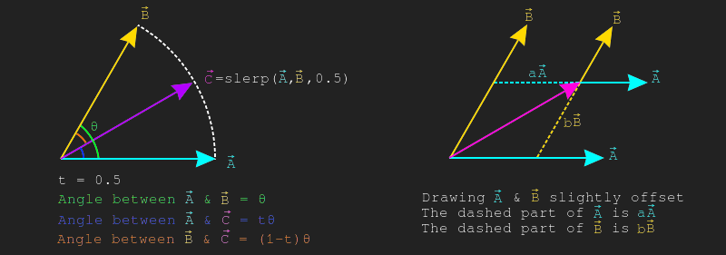
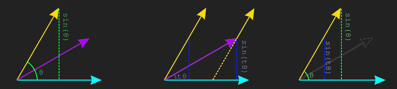
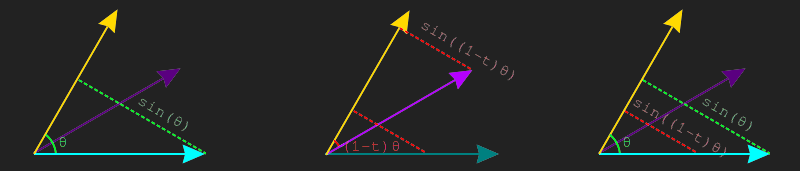

Interpolating vectors
Given two values \(x\) and \(y\), how can we interpolate between the two smoothly? That is, given \(0\), we want to be at \(x\), given \(1\) we want to be at \(y\) and given \(0.5\) we want to be half-way between the two. This is the basic problem interpolation solves.
Let's solve for the case of \(1\), to get from \(x\) to \(y\), we need to add the difference between the two to \(x\). That is, \(x + 1 * (y - x) = y\). If we change the \(1\) to a \(0\), we get the original value, \(x\). This means we can substitute the number for an interpolation value and get the final interpolation formula:
$$ f(x, y, t) = x + t * (y - x) $$
This works with real numbers, vectors, etc...
Lerp
The formula described above is the formula for linear interpolation. This formula can be used to interpolate between two vectors along the shortest line between the two. The formula remains unchanged:
$$ lerp(\vec{A}, \vec{B}, t) = \vec{A} + t * (\vec{B} - \vec{A}) $$
Implementing this in code is trivial
vec Lerp(vec from, vec to ,float t) {
// return from + (to - from) * t;
return Add(from, Scale(Sub(to, from), t));
}
Slerp
Spherical Linear Interpolation or slerp interpolates between two vectors along the shortest arc between them, it goes from \(\vec{A}\) to \(\vec{B}\) on the path of a circle instead of a line. Like lerp, slerp takes two vectors plus some normalized interpolation value. Unlike lerp, the inputs to slerp should be normalized.
To explore how a slerp works, assume we have three vectors \(\hat{A}\), \(\hat{B}\) and \(\hat{C}\) where \(\hat{C} = slerp(\hat{A}, \hat{B}, 0.5)\). The angle between \(\hat{A}\) and \(\hat{B}\) is \(\theta\), the angle between \(\hat{A}\) and \(\hat{C}\) is \(t\theta\), the angle between \(\hat{B}\) and \(\hat{C}\) is \((1-t)\theta\). This can be seen on the left side of the image below.
If we draw \(\hat{A}\) and \(\hat{B}\) at an offset so they intersect \(\hat{C}\), you will notice that \(\hat{C} = a\hat{A} + b\hat{B}\) where \(a\) and \(b\) are currently unknown scalar values. This is shown on the right side of the image below. If we can find the values of \(a\) and \(b\) we can find \(\hat{C}\) and wirte a formula for slerp.
Let's focus on finding \(b\) first. If we draw a line perpendicular to \(vec{A}\) that touches \(\hat{B}\), that gives us a right triangle. Using the Law of sines we know the length of this line is \(sin(\theta)\). This is shown on the left side of the image below. We can draw a similar line from \(\hat{C}\) to \(\hat{A}\), who's length will be \(sin(t\theta)\). This is shown in the middle of the image below, for conveniance, the line is also drawn closer to the left so it intercepts \(\hat{B}\). These two triangles are similar, the similar triangles are drawn on the right side of the image below.
Because \(\hat{B}\) is a normal vector, we know that the hypothenuse of the larger triangle is \(1\). This means we can set up the following equation: \(\frac{b}{sin(t\theta)} = \frac{1}{sin(\theta)}\). Multiply both sides by \(sin(t\theta)\) to find the final equation for \(b\):
$$ b = \frac{sin(t\theta)}{sin(\theta)} $$
Finding the value of \(a\) is done the same way, except we need to look at vectors perpendicular to \(\hat{B}\) instead of \(\hat{A}\). The left side of the image below shows a perpendicular line from \(\hat{B}\) to \(\hat{A}\), the length of this line is again \(sin(\theta)\). The middle shows a perpendicular line from \(\hat{B}\) to \(\hat{C}\), the length of this line is \(sin((1-t)\theta)\). The right side of the image below shows how these two lines make similar triangles.
Similar to before, since \(\hat{A}\) is a normal vector, we know the hypothenuse of the larger triangle is \(1\). This means we can set up the following equation: \(\frac{a}{sin((1-t)\theta)} = \frac{1}{sin(\theta)}\). Multiply both sides by \(sin((1-t)\theta)\) to find the final equation of \(a\):
$$ a = \frac{sin((1-t)\theta)}{sin(\theta)} $$
Knowing the formula for \(a\) and \(b\), we can now write the formula for \(slerp\) as:
$$ slerp(\hat{A}, \hat{B}, t) = \frac{sin((1-t)\theta)}{sin(\theta)}\hat{A} + \frac{sin(t\theta)}{sin(\theta)}\hat{B} $$
Where \(\theta\) is the angle between \(\hat{A}\) and \(\hat{B}\). Since both \(\hat{A}\) and \(\hat{B}\) are normal vectors, \(\theta\) is defined as:
$$ \theta = cos^{-1}(\hat{A} \cdot \hat{B}) $$
This slerp function can start giving strange results when trying to slerp with a very small t value. It's a good idea to fall back to nlerp when the value of t is small.
Implementing this in code is trivial:
vec Slerp(vec from, vec to, float t) {
from = Normalized(from);
to = Normalized(to);
float theta = Angle(from, to);
float sin_theta = sin(theta);
float a = sin((1 - t) * theta) / sin_theta
float b = sin(t * theta) / sin_theta;
// return from * a + to * b;
return Add(
Scale(from, a),
Scale(to, b)
);
}
Nlerp
Slerp is desierable because it interpolates on an arc, which is a very natural looking interpolation. Operations like sin and acos make slerp a bit expensive. If both input vectors are normalized, a clever workaround is to normalize the result of a lerp. This method is called nlerp. The result of nlerp is still on an arc, but unlike slerp it does not have a constant velocity.
The formula for nlerp is pretty simple, just normalizes the result of a lerp
$$ nlerp(\vec{A}, \vec{B}, t) = \frac{\vec{A} + t * (\vec{B} - \vec{A})}{\|\vec{A} + t * (\vec{B} - \vec{A})\|} $$
Implementing this in code is trivial
vec Nlerp(vec from, vec to, float t) {
vec lerp = Lerp(from, to, t);
return Normalized(lerp);
}
In most cases, the lack of constant velocity will not be a problem. The interactive sample below demonstrates the difference between lerp, slerp and nlerp. Use the slider to interpolate between the two gray vectors. The gray vectors can be moved. Lerp is shown in red, Slerp is showed in green and Nlerp is showed in blue.